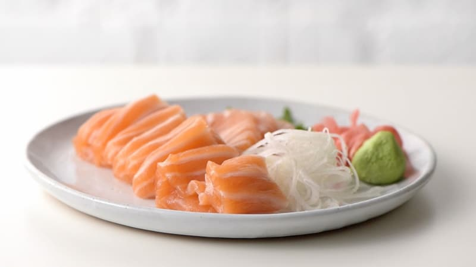
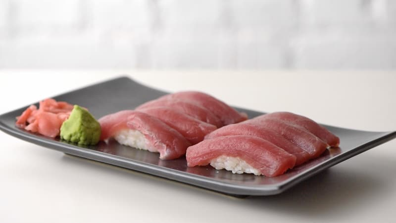
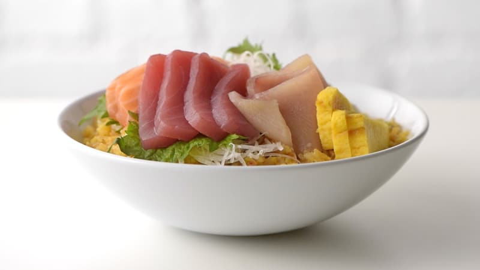
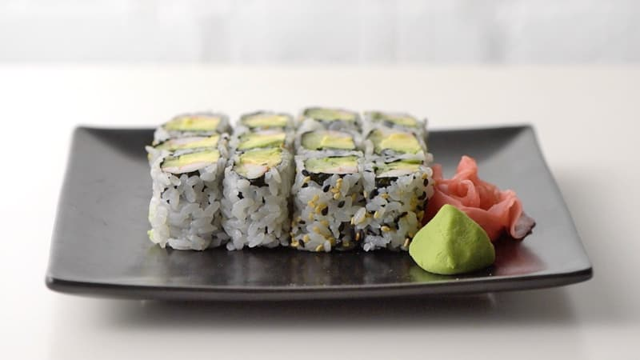
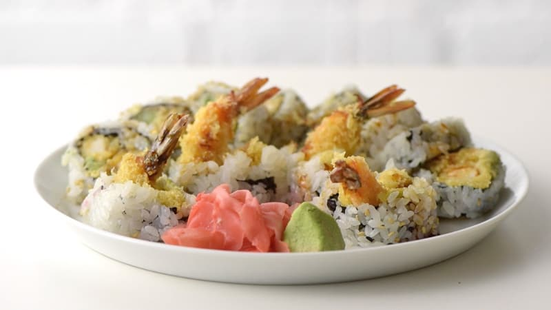
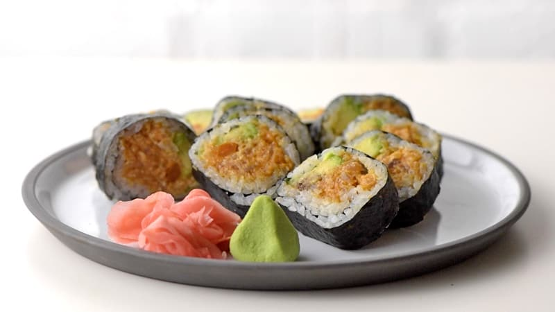
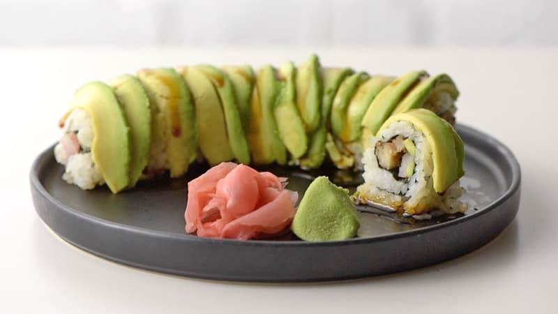
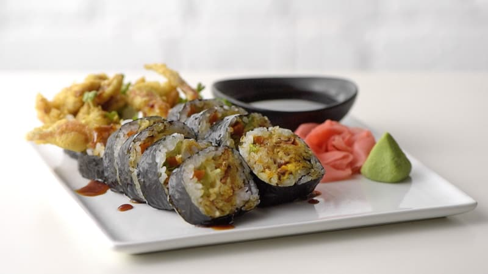

Sashimi
Tehnički nije sushi! Dok je sushi riba koja se poslužuje s rižom i može biti ukrašena drugim sastojcima, sashimi je jednostavno sirova riba, poslužena kao takva. Narezana je u duge pravokutne kriške poznate kao "hira-zukuri" i može imati wasabi, soja sos i đumbir koji služe na strani kao prateći začini.
Nigiri
Nigiri je stil suši koji se pravi ručno oblikovanjem kuglice od riže od vinove loze i preljevanjem kriške sirove ribe. Obično se poslužuje s dva komada i može se jesti rukama.
Chirashi
Chirashi, što znači "raspršeno", je zdjela riže s vinima s mješavinom sirove ribe (obično kuharskog izbora) i raznim ukrasima. To je brzo i lako napraviti i pogodno je za jelo. U Japanu se preljevi razlikuju ovisno o regiji u kojoj se poslužuju i često se jede na Hinamatsuriju, Danu djevojčica ili Danu lutaka, poseban dan u Japanu koji se slavi 3. ožujka.
California Roll
Kalifornija Rolls izgledaju prvim dojmom na obrnuto zamotan sushi roll s slojem riže izvana i listom nori iznutra, i obično uključuju avokado, imitaciju rakova, krastavca, a ponekad i tobiko (ikra letećih riba).
Tempura Roll
Tempura Rolls, poput kalifornijskih Rollsa, ima rižu na vanjskoj strani oko lista nori koji sadrži tempura-pržene škampe zajedno s povrćem poput avokada i krastavca.
Spicy Tuna Roll
Pikantni tuna Rolls također ima rižu izvana, s listom nori iznutra, omotan oko sirove tune koja je pomiješana sa začinskim majonezom.
Dragon Roll
Dragon Rolls su slični Tempura Rollsu jer koriste tempuru, avokado, krastavac, a rižu izvana posipajte susamom. Zmajeve role, međutim, uključuju tanke kriške avokada na vrhu peciva, zajedno s tobiko, a zatim ih zasipaju pikantnom majonezom i unagi umakom.
Spider Roll
Spider Rolls su napravljeni s duboko prženim rakom i uključuju ispune poput krastavca, avokado, klice daikona ili zelena salata, srna i začinjena majoneza.
Kratki video kako bolje jesti sushi
Koraci do uspješnijeg obroka
Korak 1: Koristite štapiće za sushi. Također je prihvatljivo koristiti svoje ruke, pogotovo kada je riječ o nigirima ili rukama. Kada skupljate komad suši s zajedničke ploče, koristite stražnji dio štapića za hranu.
Korak 2:Kada ne koristite svoje štapiće za jelo, odložite ih na držač keramičkih štapića. Ako nije osiguran neki držač, možete ga odustati od papirnatog omota s štapića za jelo.
Korak 3:Kiseli đumbir se jede između zalogaja kao sredstvo za čišćenje nepca i pomoć pri probavi. Nemojte ga miješati s umakom od soje ili ga ne jesti sa sushijem.
Korak 4:Kada umočite komad sushija u soja umak, nakratko umočite ribu prema dolje. Riža je već začinjena octom pa mu nije potreban sojin umak. Osim toga, riža će se raspasti ako upije bilo koju tekućinu. Ako je sushi već poslužen s umakom, poput unagi umaka ili pikantne majoneze, onda sos od soje nije potreban.
Korak 5:Iako tradicionalno nema potrebe za dodavanjem bilo kakvog wasabija ili sojinog umaka, jer je kuhar već primijenio odgovarajuću količinu sushi-ja, danas je uobičajena praksa da gosti, posebice u Americi, dodaju wasabi svojim željama bilo dodavanjem. izravno u ribu ili miješanje wasabi u soja umak.
Korak 6:Jedite komad suši u jednom zalogaju. Možda je to zalogaj, ali je bolje nego da ga pokušate ugristi na pola i da se raspada.